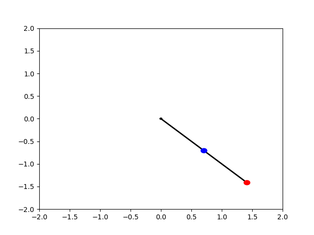
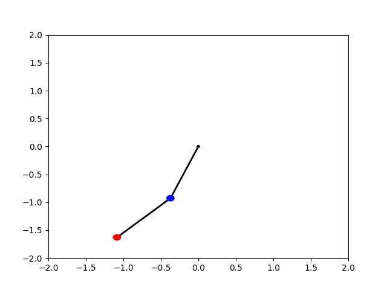

En basit formunda çifte sarkaç \(L_1,L_2\) uzunluğunda kütlesiz iki çubuk, iki \(m_1,m_2\) kütlesindeki iki topu birleştirir ve sallandırır. Eğer \(m_1\)'in olduğu kordinatları \(x_1,y_1\), \(m_2\) kütlesini \(x_2,y_2\) ile belirtirsek,
\[ x_1 = L_1 \sin\theta_1 \]
\[ y_1 = - L_1 \cos\theta_1 \]
\[ x_2 = L_2 (\sin\theta_1 + \sin\theta_2) \]
\[ y_2 = -L_2 (\cos\theta_1 + \cos \theta_2) \]
Mesela \(y_1\) için \(- L_1 \cos\theta_1\) olmasının sebebi kordinat bakımından aşağı doğru gidiyor olmamız.
Bu sistemi şurada şu kuvvet, artı şurada şu kuvvet, şurada hareket şeklinde modelleyebilirdik, fakat daha kolay bir yöntem sistemin Lagrangian'inini hesaplamak ve onun optimalliği üzerinden Euler-Lagrange denklemlerini kullanıp sistemın formüllerinin burada dökülmesini sağlamak.
Sistemin Lagrangian'ını hesaplayacağız, \(L = K - P\).
Kinetik enerji \(K\) hesabını \(\frac{1}{2} m v^2\) üzerinden yapabiliriz, ve \(v\) bileşenlerini yatay, dikey üzerinden düşünürsek, \(v = \sqrt{v_x^2 + v_y^2}\) ya da \(v^2 = v_x^2 + v_y^2\), ve üstteki örnekte hız kütle #1 için \(\dot{x}_1\) kütle #2 için \(\dot{x}_2\). O zaman
\[ K = \frac{1}{2} m_1 ( \dot{x}_1 ^2 + \dot{y}_1 ^2 ) + m_2 ( \dot{x}_2 ^2 + \dot{y}_2 ^2 ) \]
Açmak için \(\dot{x}_1, \dot{x}_2\), vs bulunmalı, üstteki \(x_1\)'in \(t\) üzerinden türevini almak lazım yani, hepsini yapinca,
\[ \dot{x}_1 = L_1 \cos^2(\theta_1)\dot{\theta_1} \]
\[ \dot{y}_1 = L_1 \sin(\theta_1)\dot{\theta_1} \]
\[ \dot{x}_2 = L_1 \cos(\theta_1)\dot{\theta}_1 + L_2 \cos (\theta_2)\dot{\theta}_2 \]
\[ \dot{y}_2 = L_1 \sin(\theta_1)\dot{\theta}_1 + L_2 \sin(\theta_2)\dot{\theta}_2 \]
\[ K = 1/2 m_1 \dot{\theta}_1^2 L_1^2 + 1/2 m_2 [ \dot{\theta}_1^2 L_1^2 + \dot{\theta}_2^2 L_2^2 + 2 \dot{\theta}_1^2 L_1 \dot{\theta}_1L_2\cos(\theta_1 - \theta_2)] \]
Potansiyel enerjiye gelelim, tek sarkaçtan \(m g h\) formülü en yüksek noktada en fazla potansiyel enerji verir. Bir kordinat sisteminde kütle #1'ın sabitlendiği noktaya orijin dedik, o zaman en alt noktada enerji en azdir. Fakat mesela \(L_1\) negatif, pozitifsel durumu bunları idare eder zaten, biz direk formülü yazarsak,
\[ P = m g y_1 + m g y_2 \]
Sadece dikey kordinat kullanıldı çünkü potansiyel enerji üzerinde tek etkili olan dikey kordinattır.
\[ P = -m_1 g L_1 \cos(\theta_1) - m_2 g (L_1 \cos(\theta_1) + L_2 \cos(\theta_2)) \]
Lagrangian \(L = K - P\)'yi elde etmek icin
\[ L = \frac{1}{2} m_1 (\dot{\theta}_1 L_1)^2 + \frac{1}{2} m_2 [(\dot{\theta}_1L_1)^2 + (\dot{\theta}_2 L_2 )^2 + .. \] \[ 2 \dot{\theta}_1^2 L_1 \dot{\theta}_1L_2\cos(\theta_1 - \theta_2)] - [-(m_1+m_2) g L_1 \cos(\theta_1) - m_2 L_2 g \cos(\theta_2)] \]
Basitleştirince
\[ L = \frac{1}{2} (m_1 + m_2) L_1^2 \dot{\theta}_1^2 + \frac{1}{2} m_2 L_2^2 \dot{\theta}_2^2 + m_2 L_1 L_2 \dot{\theta}_1\dot{\theta}_2 \cos(\theta_1-\theta_2) + .. \] \[ (m_1 + m_2) g L_1 \cos(\theta_1) + m_2 L_2 g \cos(\theta_2) \]
Bu sistemden bir fiziksel sistemi üretmek istiyorsam \(L\)'yi minimize edecek fonksiyonları elde etmem lazım. Burada bir değişimsel calculus problemi var, yani Euler-Lagrange denklemlerine bakabilirim.
\[ \frac{\mathrm{d}}{\mathrm{d} t} \left( \frac{\partial L}{\partial \dot{\theta}} \right) - \frac{\partial L}{\partial \theta} = 0 \]
Her \(\theta_1,\theta_2\) için üstteki denklemi kullanacağım, ve elde ettiğim formüller bu sistemin dinamik formülleri olacaklar.
\(\theta_1\) için
\[ \frac{\partial L}{\partial \theta_1} = -L_1 g (m_1 + m_2) \sin(\theta_1) - m_2 L_1 L_2 \dot{\theta}_1\dot{\theta_2}\sin(\theta_1-\theta_2) \]
\[ \frac{\partial L}{\partial \dot{\theta}_1} = (m_1 + m_2) L_1^2 \dot{\theta}_1 + m_2 L_1 L_2 \dot{\theta}_2 \cos(\theta_1- \theta_2) \]
\[ \frac{\mathrm{d} }{\mathrm{d} t} \left( \frac{\partial L}{\partial \dot{\theta}_1} \right) = (m_1 + m_2) L_1^2 \ddot{\theta}_1 + m_2 L_1 L_2 \ddot{\theta}_2 \cos(\theta_1-\theta_2)- m_2 L_1 L_2 \dot{\theta}_2 \sin(\theta_1-\theta_2)(\dot{\theta}_1 - \dot{\theta}_2) \]
Üsttekileri bir araya koyarsak,
\[ \Rightarrow (m_1 + m_2) L_1^2 \ddot{\theta}_1 + m_2L_1 L_2 \ddot{\theta}_2 \cos(\theta_1-\theta_2)- \] \[ m_2 L_1 L_2 \dot{\theta}_2 \sin(\theta_1-\theta_2)(\dot{\theta}_1 - \dot{\theta}_2) + g L_1 (m_1 + m_2) \sin(\theta_1) + m_2 L_1 L_2 \dot{\theta}_1\dot{\theta_2}\sin(\theta_1-\theta_2)=0 \]
\[ \Rightarrow (m_1 + m_2) L_1^2 \ddot{\theta}_1 + m_2 L_1 L_2 \ddot{\theta}_2 \cos(\theta_1-\theta_2) + g L_1 (m_1 + m_2) \sin(\theta_1) + \] \[ m_2 L_1 L_2\dot{\theta}_2 \sin(\theta_1-\theta_2) \left[ (\dot{\theta}_1 - \dot{\theta}_1 + \dot{\theta}_2) \right] =0 \]
\[ \frac{\mathrm{d}}{\mathrm{d} t} \left( \frac{\partial L}{\partial \dot{\theta_1}} \right) - \frac{\partial L}{\partial \theta_1} = (m_1 + m_2) L_1^2 \ddot{\theta}_1 + m_2 L_1 L_2 \ddot{\theta}_2 \cos(\theta_1-\theta_2) + g L_1 (m_1 + m_2) \sin(\theta_1) + \] \[ m_2 L_1 L_2\dot{\theta}_2^2 \sin(\theta_1-\theta_2) =0 \]
Basitleştirip \(\ddot{\theta}_1\) için çözelim,
\[ \ddot{\theta}_1 = \frac{ -m_2 L_2 \ddot{\theta}_2 \cos (\theta_1-\theta_2) - m_2 L_2 \dot{\theta}_2^2 \sin(\theta_1 - \theta_2) - (m_1 + m_2) g \sin(\theta_1) } {(m_1 + m_2) L_1 } \qquad (2) \]
\(\theta_2\) için
\[ \frac{\partial L}{\partial \theta_2} = m_2 L_1 L_2 \dot{\theta}_1 \dot{\theta}_2 \sin(\theta_1 - \theta_2) - L_2 m_2 g \sin(\theta_2) \]
\[ \frac{\partial L}{\partial \dot{\theta}_2 } = m_2 L_2^2 \dot{\theta}_2 + m_2 L_1 L_2 \dot{\theta}_1 \cos(\theta_1 - \theta_2) \]
\[ \frac{\mathrm{d}}{\mathrm{d} t} \left(\frac{\partial L}{\partial \dot{\theta_2}} \right) = m_2 L_2^2 \ddot{\theta}_2 + m_2 L_1 L_2 \ddot{\theta}_1 \cos(\theta_1 - \theta_2) - m_2 L_1 L_2 \dot{\theta}_1 \sin(\theta_1 - \theta_2)(\dot{\theta}_1 - \dot{\theta}_2) \]
E-L denklemine sokunca
\[ \frac{\mathrm{d}}{\mathrm{d} t} \left( \frac{\partial L}{\partial \dot{\theta_2}} \right) - \frac{\partial L}{\partial \theta_2} = L_2 \ddot{\theta}_2 + L_1 \ddot{\theta}_1 \cos(\theta_1 - \theta_2) - L_1 \dot{\theta}_1^2 \sin(\theta_1 - \theta_2) + g \sin (\theta_2) = 0 \]
Aynı şekilde basitleştirip \(\ddot{\theta}_2\) için çözelim,
\[ \ddot{\theta}_2 = \frac{ -L_1 \ddot{\theta}_1 \cos(\theta_1-\theta_2) + L_1 \dot{\theta}_1^2\sin(\theta_1-\theta_2) - g \sin(\theta_2) } {L_2} \qquad (1) \]
Şimdi (1) ve (2) formüllerine bakarsak elimde \(\ddot{\theta}_2\)'ye dayanan bir \(\ddot{\theta}_1\) formülü, \(\ddot{\theta}_1\)'e dayanan bir \(\ddot{\theta}_2\) formülü var. Bu formülleri kullanarak içinde aynı anda \(\ddot{\theta}_1\) ya da \(\ddot{\theta}_2\) içermeyen (yani her denklem ya sadece \(\ddot{\theta}_1\) ya da sadece \(\ddot{\theta}_2\) içerecek) iki tane yeni formül üretebilirim.
Eğer (1)'i (2) içine sokarsak,
\[ \ddot{\theta}_1 (m_1 + m_2) L_1 = -m_2 \big[-L_1\ddot{\theta}_1 \cos(\theta_1-\theta_2) + L_1\dot{\theta}_1^2 \sin(\theta_1-\theta_2) - g \sin(\theta_2) \big] \cos(\theta_1-\theta_2)- \] \[ m_2 L_2 \dot{\theta}_2^2 \sin(\theta_1-\theta_2)- (m_1 + m_2) g \sin(\theta_1) \]
İçinde \(\ddot{\theta}_1\) olan tüm terimleri eşitliğin sol tarafına taşırsam,
\[ \ddot{\theta}_1 [L_1 (m_1 + m2) - m_2 L_1 \cos^2(\theta_1-\theta_2)] = -m_2 L_1 \dot{\theta}_1^2 \sin(\theta_1-\theta_2) \cos(\theta_1-\theta_2) + g m_2 \sin(\theta_2) \cos(\theta_1-\theta_2) - \] \[ m_2 L_2 \dot{\theta}_2^2 \sin(\theta_1-\theta_2) - (m_1 + m_2) g \sin(\theta_1) \]
\(\ddot{\theta}\) için çözersem,
\[ -m_2 L_1 \dot{\theta}_1^2 \sin(\theta_1-\theta_2)\cos(\theta_1-\theta_2) + \] \[ \ddot{\theta}_1 = \frac{ g m_2 \sin(\theta_2)\cos(\theta_1-\theta_2) - m_2 L_2 \dot{\theta}_2^2 \sin(\theta_1-\theta_2) - (m_1+m_2)g\sin(\theta_1) } {L_1 (m_1+m_2)-m_2L_1\cos^2(\theta_1-\theta_2)} \qquad (3) \]
Dikkat: Bölünen çok kalabalık, o iki satır bölünendeki değerleri gösteriyor.
Aynı şekilde \(\ddot{\theta}_2\) için işlem yapınca,
\[ m_2 L_2 \dot{\theta}_2^2 \sin(\theta_1-\theta_2)\cos(\theta_1-\theta_2) + \] \[ \ddot{\theta}_2 = \frac{ g \sin(\theta_1) \cos(\theta_1-\theta_2)(m_1+m_2) + L_1 \dot{\theta}_1^2 \sin(\theta_1-\theta_2)(m_1+m_2) - g\sin(\theta_2) (m_1+m_2) } {L_2 (m_1+m_2) - m_2 L_2 \cos^2 (\theta_1-\theta_2)} \qquad (4) \]
Artık elimde iki tane ikinci dereceden diferansiyel denklem var. Bu denklemleri birinci derece diferansiyel denkleme çevirebilirim. Ufak bir değişken değimi numarası kullanırsam,
\[ z_1 = \theta_1, \quad z_2 = \theta_2, \quad z_3 = \dot{\theta}_1, \quad z_4 = \dot{\theta}_2 \]
Bu değişkenlerin türevini alırsam,
\[ \dot{z}_1 = \dot{\theta}_1, \quad \dot{z}_2 = \dot{\theta}_2, \quad \dot{z}_3 = \ddot{\theta}_1, \quad \dot{z}_4 = \ddot{\theta}_1 \]
Böylece dört yeni diferansiyel denklem yarattık. (3), (4) denklemlerinde \(\theta_1\) yerine \(z_1\), \(\dot{\theta}_2\) yerine \(z_4\), \(\dot{\theta}_1\) yerine \(z_3\), vs. koyunca,
\[ \dot{z}_1 = \dot{\theta}_1 \]
\[ \dot{z}_2 = \dot{\theta}_2 \]
\[ -m_2 L_1 z_4^2 \sin(z_1-z_2)\cos(z_1-z_2) + \] \[ \dot{z}_3 = \frac{ g m_2 \sin(z_2)\cos(z_1-z_2) - m_2 L_2 z_4^2 \sin(z_1-z_2) - (m_1+m_2)g\sin(z_1) } {L_1 (m_1+m_2)-m_2L_1\cos^2(z_1-z_2)} \]
\[ m_2 L_2 z_4^2 \sin(z_1-z_2)\cos(z_1-z_2) + \] \[ \dot{z}_4 = \frac{ g \sin(z_1) \cos(z_1-z_2)(m_1+m_2) + L_1 z_4^2 \sin(z_1-z_2)(m_1+m_2) - g\sin(z_2) (m_1+m_2) } {L_2 (m_1+m_2) - m_2 L_2 \cos^2 (z_1-z_2)} \]
Bu ODE sistemini sayısal olarak çözebiliriz. Başlangıç açılarını \(\theta_1,\theta_2\) için \(\pi/4\) olarak seçtik, sarkaç sağ taraftan başlayacak, ve sallanacak.
from matplotlib.patches import Circle
import matplotlib.pyplot as plt
from numpy import cos, sin
from scipy.integrate.odepack import odeint
m1=1.0; m2=1.0; L1=1.0; L2=1.0
g=9.8
def f(z, t):
z1, z2, z3, z4 = z
tmp1 = (-m2*L1*z4**2*sin(z1-z2)*cos(z1-z2) + g*m2*sin(z2)*cos(z1-z2) - \
m2*L2*z4**2*sin(z1-z2) - (m1+m2)*g*sin(z1)) \
/(L1*(m1+m2)-m2*L1*cos(z1-z2)**2);
tmp2 = (m2 * L2 * (z4**2) *sin(z1-z2) * cos(z1-z2) + \
g*sin(z1)*cos(z1-z2)*(m1+m2) + L1*(z4**2)*sin(z1-z2)*(m1+m2) - \
g*sin(z2)*(m1+m2)) \
/ (L2*(m1+m2)-m2*L2*cos(z1-z2)**2)
z = [ z3, z4, tmp1, tmp2 ]
return z
z0 = np.array([np.pi/4, np.pi/4, 0.0, 0.0])
t = np.linspace(0, 10, 100)
z = odeint(f, z0, t)
x1=L1*sin(z[:,0])
y1=-L1*cos(z[:,0])
x2=L1*sin(z[:,0])+L2*sin(z[:,1])
y2=-L1*cos(z[:,0])-L2*cos(z[:,1])
def make_plot(fout,x1,y1,x2,y2):
r = 0.05
fig = plt.figure()
ax = fig.add_subplot(111)
ax.set_xlim(-2,2)
ax.set_ylim(-2,2)
plt.plot([0, x1, x2], [0, y1, y2], lw=2, c='k')
c0 = Circle((0, 0), r/2, fc='k', zorder=10)
c1 = Circle((x1, y1), r, fc='b', ec='b', zorder=10)
c2 = Circle((x2, y2), r, fc='r', ec='r', zorder=10)
ax.add_patch(c0)
ax.add_patch(c1)
ax.add_patch(c2)
plt.savefig(fout)
for i in range(len(x1)):
if i % 5 == 0:
make_plot('frames/img{:04d}.png'.format(i),x1[i],y1[i],x2[i],y2[i])Birkac ornek,
 
Sistemin belli anlarda "fotoğrafını çekip'' grafikledik, ve bu grafikleri animasyon olarak birleştirirsek,
! convert -loop 0 -delay 100 frames/*.png frames/dblpend.gifSonuçları [2]'de bulabiliriz.
Kaynaklar
[1] Altic, sophia.dtp.fmph.uniba.sk/~kovacik/doublePendulum.pdf
[2] Bayramlı, Double Pendulum Animasyonu, https://raw.githubusercontent.com/burakbayramli/classnotes/master/phy/phy_050_cont4/frames/dblpend.gif
[3] Virginia Tech, http://galileo.phys.virginia.edu/education/outreach/8thgradesol/EnergyPendulum.htm
[4] Altic, https://mse.redwoods.edu/darnold/math55/DEproj/sp08/jaltic/ProjectTitleOnline.pdf
{kind=link}